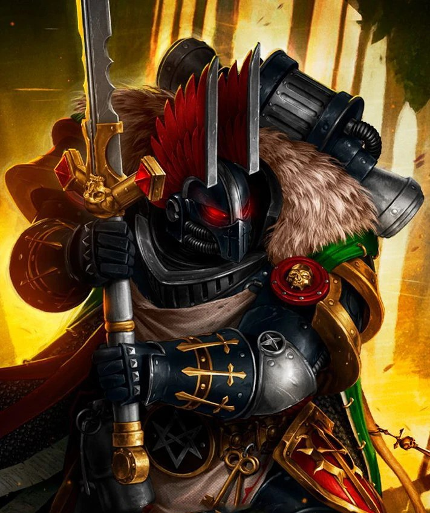

Corswain
| Corswain | |
|---|---|
| Seneschal of the Lion and Champion of the I Legion | |
 Corswain as Seneschal, in the black of the Dark Angels Artwork © Games Workshop | |
| Seneschal of the Dark Angels | |
| Tenure | c. 008.M31 – after the Siege of Terra |
| Primarch | Lion El'Jonson |
| Champion of the I Legion | |
| Tenure | Great Crusade – Horus Heresy |
| Predecessor | Alajos (as mentor and bladesmaster) |
| Paladin of the 9th Order | |
| Tenure | Great Crusade |
| Born | Caliban |
| Status | Survived the Fall of Caliban; later fate unrecorded |
| Allegiance | Imperium of Mankind (loyalist) |
| Wargear | The Blade; the Armour of the Forest; the Mantle of the Champion |
| Known for | Saving the Lion at Tsagualsa; the defence of the Hollow Mountain in the Siege of Terra |
Corswain was a Space Marine of the Dark Angels Legion, its Champion and a Paladin of its 9th Order during the Great Crusade, and from the middle years of the Horus Heresy the Seneschal of the primarch Lion El'Jonson, commanding half the Legion in his name. He was counted the finest swordsman of the I Legion and ranked in reputation with Sigismund of the Imperial Fists and Raldoron of the Blood Angels.[1]
Corswain saved the Lion's life on Tsagualsa by running Konrad Curze through from behind. As Seneschal he hunted the Death Guard splinter fleet of Calas Typhon, and then broke through to Terra in the last weeks of the Siege of Terra. With a vanguard of Dark Angels he took and held the Hollow Mountain, the seat of the Astronomican, against the Death Guard, so that the beacon could be relit to guide Guilliman's relief fleet. He survived the Siege, served the Lion in the Great Scouring and fought in the Fall of Caliban. Later records do not mention him.[2]
Early life and Great Crusade
[edit]Corswain was born on Caliban but did not belong to the knightly Order that ruled it, which set him apart from both factions in the Legion after the Lion's discovery: the Terran-born veterans and the new Calibanite recruits. Dark Angels records say that he was deliberately trained to belong to no single Host or Order, and to hold the respect of all.[1]
He rose to command as Paladin of the 9th Order under Master Alajos, the Legion's bladesmaster, and was one of only two Dark Angels ever to beat Alajos with the sword. He bore the Mantle of the Champion over his armour to hide the marks of his own Order, and fought as the Legion's Champion in its campaigns.[1]
In 970.M30 Corswain was among the 9th Order forces that stripped Luther of his warships after Luther disobeyed the Lion's order to remain on Caliban and came to aid Horus at Zaramund. Dark Angels scholars count the episode among the grievances that drove Luther to rebellion.[1]
Horus Heresy
[edit]Diamat and Thramas
[edit]In the opening years of the Heresy Corswain fought beside the Lion at Diamat against the Sons of Horus, and then in the Thramas Crusade, the long war of the Dark Angels against the Night Lords in the eastern fringe.[3]
Two years into that campaign Curze asked for a parley on Tsagualsa. Corswain and Alajos attended the Lion; Curze came with his First Captain, Jago Sevatarion, and his Lord Commander, Sheng. The primarchs fought after Curze insulted the Lion. Sevatarion beheaded Alajos, and Curze was strangling the Lion when Corswain drove his sword into Curze's back. Curze fell into a coma, and Sheng carried him away as both Legions' reinforcements arrived.[3]
Seneschal
[edit]After the Battle of Perditus the Lion named Corswain his seneschal and gave him half the surviving Legion to destroy the Death Guard splinter fleet of Calas Typhon, while the Lion took the other half towards Ultramar. Corswain's force suffered heavy losses, and he sent volunteers to Caliban with transports to bring reinforcements. Through the dealings of that period he recruited Vassago, the adjutant of the Librarian Zahariel El'Zurias, from the shipyard world of Zaramund.[3]
Siege of Terra
[edit]Corswain's fleet reached the edge of the Sol System during the Siege of Terra and made contact with Admiral Niora Su-Kassen of the Armada Imperialis, who held the Imperial Fists' fortress-ship Phalanx. His message, "We come to stand with Terra", is recorded in the Siege logs. Corswain persuaded Su-Kassen to support a landing, and used the Imperator Somnium, one of the three flagships the Emperor used in the Great Crusade, as a fireship to break the traitor blockade.[2]
The Dark Angels landed at the Hollow Mountain, the seat of the Astronomican, and found it held by daemons. Corswain was nearly killed by psychic backlash when a daemon prince was slain, and was saved by Vassago. On the orders of Sanguinius, Corswain undertook to hold the mountain and relight the Astronomican, so that its light could guide Guilliman's fleet to Terra through the warp storms.[2]
In the final days Corswain learned that Vassago had been murdered by other Dark Angels in his own force, Calibanites who meant to use the warp for their own ends. The Death Guard under Typhon, now called Typhus, then came to retake the Astronomican. Corswain killed a Plague Marine champion and was wounded, and was steadied by Zahariel, who had taken the office of Lord Cypher. The defenders were close to being overwhelmed when Euphrati Keeler and her followers of the Lectitio Divinitatus relit the Astronomican through their faith, driving back the traitors and giving Guilliman's Navigators the course to Terra.[2][a]
After the Siege
[edit]Corswain met the Lion again when the main body of the Legion reached Terra. As the Lion's emissary, he worked with Archamus of the Imperial Fists and Bjorn of the Space Wolves on Dorn's plan for a war of vengeance against the fleeing traitors, the Great Scouring.[1]
He returned with the Legion to Caliban and was among the first loyalists to land in the battle that destroyed the planet. In the fighting he duelled the leader of the Fallen who bore the title Lord Cypher, who escaped. Dark Angels records sealed after the Fall do not describe his later life or death.[1]

Character
[edit]Dark Angels records describe Corswain as open, steady and loyal, and as one of the few officers trusted by both the Terran and the Calibanite factions of the Legion. His command at Terra showed his willingness to act without orders: he chose to land on Terra and seize the Astronomican on his own judgement, and in the Siege he placed himself under the authority of Sanguinius and Dorn rather than await the Lion.[2]
His relationship with Zahariel and the other Librarians of the Legion was close but uneasy. The discovery that Calibanites in his own force had murdered Vassago, and the later rebellion of the Legion on Caliban, are said to have weighed heavily on him.[1]
Wargear
[edit]- The Blade, a Terranic greatsword given to him by Alajos. Legion tradition holds that Grand Master Urian Vendraig raised it at Advex-Mors to begin the First Rangdan Xenocide, and that a Legion Champion carried it in every campaign against the Rangdan after that.
- The Armour of the Forest, artificer armour struck from Terran steel by the Lion in the forests of Caliban.
- The Mantle of the Champion, worn to hide the symbols of his Order and Host.
Legacy
[edit]Corswain is a hero of the Dark Angels and their successor Chapters, the Unforgiven. The sword he carried at Caliban, now called the Blade of Corswain, is awarded as the bladesman's honour to the finest swordsman of the Chapter's Ravenwing. A relic power maul of the Deathwing, the Lost Mace of Corswain, also bears his name.[4]
Timeline
[edit]| Date | Event |
|---|---|
| 970.M30 | Corswain's 9th Order strips Luther of his warships after Luther disobeys the Lion and aids Horus at Zaramund |
| c. 008.M31[b] | Corswain is named Seneschal of the Dark Angels after the Battle of Perditus |
| c. 008.M31[c] | At Tsagualsa Corswain stabs Konrad Curze in the back and saves the Lion El'Jonson |
| early M31 | Corswain fights at Diamat against the Sons of Horus |
| M31 | Corswain sends volunteers to Caliban for reinforcements, and recruits Vassago from the shipyard world of Zaramund |
| M31 | Corswain hunts the Death Guard splinter fleet of Calas Typhon |
| 013.M31 | Corswain's fleet reaches the Sol System during the Siege of Terra |
| 013–014.M31 | Corswain takes and holds the Hollow Mountain and the Astronomican is relit |
| 014.M31 | Corswain survives the Siege of Terra and serves the Lion in the Great Scouring |
| after 014.M31 | Corswain fights in the Fall of Caliban and is not recorded afterwards |
See also
[edit]Notes
[edit]- ^ Some popular histories credit the defence of the Hollow Mountain to the Lion himself. Dark Angels and Custodian records agree that the Lion had not reached Terra; the defence was led by Corswain and the Legion's vanguard.
- ^ Estimated from the sequence of events; no record gives an exact year.
- ^ Estimated from the sequence of events; no record gives an exact year.
References
[edit]- ^ a b c d e f g Wraight, Chris. Ashes of the Imperium (novel). Black Library, Chs. 15, 31. Thorpe, Gav. Angels of Caliban (novel). Black Library, Ch. 15.
- ^ a b c d e French, John. Mortis (novel). Black Library, Chs. 5, 12, 16, 22. Thorpe, Gav. Holder of the Keys (Audio Book). Black Library.
- ^ a b c Thorpe, Gav. Luther: First of the Fallen (novel). Black Library, "Tale of the Lion", "Tale of the Traitor". Abnett, Dan. The End and the Death: Volume I (novel). Black Library, 2:i, 3:xxiii.
- ^ Abnett, Dan. The End and the Death: Volume II (novel). Black Library, 7:xxxii. Abnett, Dan. The End and the Death: Volume III (novel). Black Library, 10:xv.